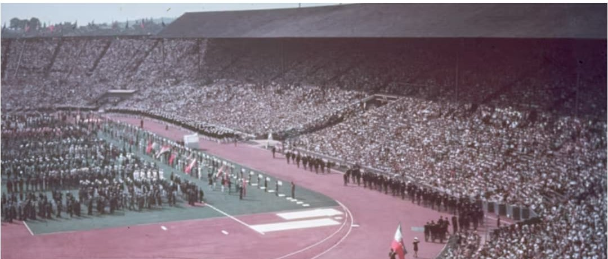
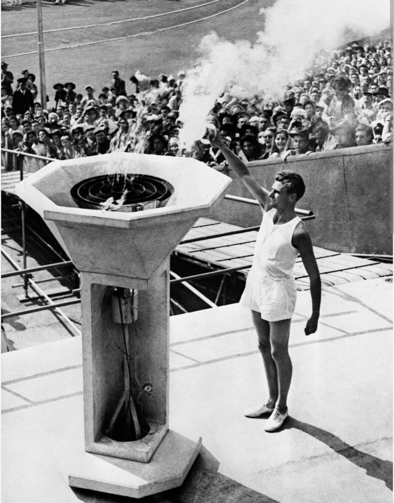

En 1936, Berlin devient le théâtre d’un événement sans précédent. Sous les yeux du monde, le régime nazi transforme les Jeux Olympiques en une immense vitrine politique destinée à glorifier l’Allemagne, à masquer la brutalité du pouvoir et à imposer son idéologie par l’image, la discipline et la mise en scène.
Les Jeux, censés incarner la paix et la rencontre entre les peuples, sont détournés pour présenter le IIIᵉ Reich comme un pays moderne, organisé et pacifique, alors même que les persécutions, la censure et la répression sont déjà en place. Berlin 1936 devient ainsi l’un des exemples les plus frappants de l’utilisation du sport comme instrument de propagande.

Les rassemblements massifs, les tribunes monumentales et les drapeaux omniprésents montrent que les Jeux ne sont pas seulement sportifs : ils sont un instrument de propagande destiné à impressionner les visiteurs étrangers et à galvaniser la population allemande.
Chaque cérémonie, chaque défilé, chaque prise de parole est soigneusement orchestré. Le régime cherche à montrer une Allemagne unie derrière son chef, disciplinée, enthousiaste et prête à suivre la ligne imposée par le pouvoir. Le sport sert de décor à un message politique permanent.

Dans le stade olympique, des dizaines de milliers de spectateurs exécutent le salut nazi. Le sport devient un décor où le régime impose ses symboles et sa vision du monde.
Les gradins, les tribunes officielles et la présence constante des uniformes rappellent que le pouvoir est partout. Le stade n’est plus seulement un lieu de compétition : il devient une scène où se joue la mise en scène du régime, sous le regard des caméras et des photographes.

Les anneaux olympiques et la croix gammée flottent côte à côte. Le régime nazi cherche à se présenter comme moderne, organisé et pacifique, tout en imposant ses emblèmes partout où les caméras se posent.
Cette juxtaposition des symboles olympiques et nazis est au cœur de la stratégie de propagande : associer l’image du IIIᵉ Reich à un événement prestigieux, reconnu internationalement, pour légitimer le régime aux yeux du monde et donner une apparence de normalité à un pouvoir déjà profondément violent.

L’architecture monumentale du stade, pensée pour la propagande, doit frapper les esprits. Tout est calculé pour donner une image de puissance et de grandeur.
Les lignes massives, les volumes imposants et la capacité du stade répondent à une logique claire : montrer que l’Allemagne est capable d’organiser un événement gigantesque, maîtrisé dans les moindres détails. Le bâtiment lui-même devient un outil de communication politique.

Les deux tours portant les anneaux olympiques deviennent l’un des symboles les plus photographiés des Jeux. Le régime nazi comprend parfaitement la force des images et les utilise pour façonner sa réputation internationale.
Cette entrée, souvent montrée dans les reportages et les films, sert de porte d’accès visuelle au récit que le régime veut imposer : celui d’une Allemagne moderne, ordonnée, tournée vers l’avenir, alors que la réalité politique est tout autre.

Les démonstrations physiques synchronisées illustrent l’obsession du régime pour la discipline, la force et l’unité. Le sport devient un outil de contrôle social et de mise en scène de la “jeunesse allemande”.
Ces exercices collectifs, filmés et diffusés, montrent des corps alignés, obéissants, parfaitement coordonnés. Ils incarnent l’idéal de la communauté soudée, où l’individu disparaît derrière le groupe, au service d’un projet politique total.

Au milieu de la propagande omniprésente, un homme devient le symbole de la résistance silencieuse face au régime nazi : Jesse Owens, sprinteur et sauteur américain. En remportant quatre médailles d’or (100 m, 200 m, relais 4×100 m, saut en longueur), il pulvérise les théories raciales du régime sous les yeux du monde entier.
Owens n’est pas seulement un champion : il devient une contradiction vivante de l’idéologie nazie. Alors que le régime prône la supériorité de la “race aryenne”, un athlète afro-américain domine les épreuves les plus prestigieuses, avec une élégance et une puissance qui marquent l’histoire du sport.
Son duel avec le champion allemand Luz Long lors du saut en longueur est l’un des moments les plus célèbres des Jeux. Long, sportif respecté, conseille Owens après un saut raté, devant des milliers de spectateurs. Owens gagne l’or, Long l’argent. Leur poignée de main, immortalisée par les photographes, devient un geste de courage et d’humanité dans un stade saturé de symboles nazis.
Malgré son triomphe, Owens ne reçoit aucun honneur particulier de son pays à son retour. Mais son héritage dépasse les podiums : il reste l’un des plus grands symboles de la lutte contre le racisme, et l’un des rares moments où les Jeux de Berlin échappent à la propagande du régime.

Pour la première fois dans l’histoire, la flamme olympique traverse les villes d’Europe avant d’arriver au stade. Ce rituel, aujourd’hui universel, est une création du régime nazi. Hitler comprend la puissance symbolique d’un feu voyageant de main en main, unissant les peuples autour d’un récit mythologique réinventé pour servir sa propagande.
Le relais de la flamme permet de relier symboliquement l’Allemagne à la Grèce antique, en prétendant inscrire le IIIᵉ Reich dans une continuité historique prestigieuse. Ce geste, pensé pour la propagande, deviendra pourtant l’un des éléments les plus durables de l’héritage des Jeux modernes.

Le passage de la flamme à la porte de Brandebourg devient l’une des images les plus célèbres des Jeux. Ce rituel, né en 1936, est aujourd’hui l’un des symboles majeurs des Jeux Olympiques modernes.
Les photographies et les films de ce moment sont largement diffusés. Ils montrent une Allemagne au centre d’un récit olympique qui semble universel, alors que le régime utilise ce rituel pour renforcer sa propre légitimité.

La descente de la flamme dans le stade, sous les saluts et les regards de la foule, achève le rituel imaginé par le régime. Ce moment, soigneusement filmé et photographié, ancre définitivement la flamme olympique dans l’imaginaire collectif.
Le feu, symbole ancien, est ici réinterprété pour servir un récit politique. Pourtant, après la guerre, la flamme sera conservée comme symbole des Jeux, détachée de son origine nazie, et réinvestie dans un sens plus universel.
Après les Jeux de Berlin 1936, le monde bascule dans la guerre. Les deux éditions suivantes sont annulées :
Pendant douze ans, aucun Jeux Olympiques n’a lieu. Le mouvement olympique est suspendu, les nations sont en guerre, et l’Europe est dévastée.

En 1948, Londres accueille les premiers Jeux d’après-guerre. Le pays est encore marqué par les bombardements, le rationnement et la reconstruction. Ces Jeux sont surnommés « les Jeux de l’austérité ».
Aucun village olympique n’est construit : les athlètes sont logés dans des casernes, des écoles ou des bâtiments publics. Les infrastructures sont modestes, les moyens limités, mais l’événement symbolise la renaissance du mouvement olympique.
Deux nations sont exclues :
Londres 1948 marque le retour de la paix, du sport et de la coopération internationale, dans un monde qui tente de se reconstruire après les destructions du conflit.


Malgré les difficultés, les Jeux de Londres 1948 sont un succès. Ils ouvrent une nouvelle ère pour les Jeux Olympiques, désormais associés à la reconstruction, à la paix et à la coopération entre les nations.
Après la propagande de Berlin 1936, Londres 1948 représente un contraste total : des Jeux modestes, humains, sans faste, mais porteurs d’un message d’espoir dans un monde qui se relève.